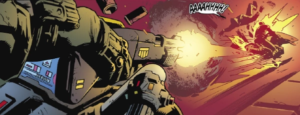

A version of Judge Dredd published by IDW and often set in the past so as to avoid continuity issues.
Art by Simon Coleby & Leonard O'Grady
| Story Title | Parts | Pages | w indicates a wraparound coverCovers | Year(s) | Issues | Writer | Artist | Colourist | Letterer |
|---|---|---|---|---|---|---|---|---|---|
ReprintYear One | 4 | + 4 credit pages88 | 0 | 2022-2023 | M451-M454 | Matt Smith | Simon Coleby | Leonard O'Grady | Chris Mowry |
ReprintMega-City Two: City of Courts | 5 | + 5 credit pages110 | 0 | 2022-2023 | M451-M455 | Douglas Wolk | Ulises Farinas | Ryan Hill | Tom B. Long |
ReprintDeviations: Howl of the Wolf | 1 | + 1 credit pages24 | 0 | 2023 | M463 | John McCrea | John McCrea | Mike Spicer | Simon Bowland |
ReprintUnder Siege | 4 | + 4 credit pages82 | 0 | 2024 | M464-M467 | Mark Russell | Max Dunbar | Jose Luis Rio | Simon Bowland |
ReprintToxic | 4 | + 4 credit pages80 | 0 | 2024 | M468-M471 | Paul Jenkins | Marco Castiello | Jason Millet | Shawn Lee |
ReprintFalse Witness | 4 | + 4 credit pages80 | 0 | 2024 | M472-M475 | Brandon Esaton | Kei Zama | Eva de la Cruz | Shawn Lee |
| year | episodes | pages |
| 2013 | 0 | 0 |
| 2014 | 0 | 0 |
| 2015 | 0 | 0 |
| 2016 | 0 | 0 |
| 2017 | 0 | 0 |
| 2018 | 0 | 0 |
| 2019 | 0 | 0 |
| 2020 | 0 | 0 |
| 2021 | 0 | 0 |
| 2022 | 2 | 44 |
| 2023 | 8 | 178 |
| 2024 | 12 | 242 |
| 2025 | 0 | 0 |
| 2026 | 0 | 0 |
| 2027 | 0 | 0 |
| 2028 | 0 | 0 |
| 2029 | 0 | 0 |
| 2030 | 0 | 0 |
| 2031 | 0 | 0 |
| 2032 | 0 | 0 |
| 2033 | 0 | 0 |